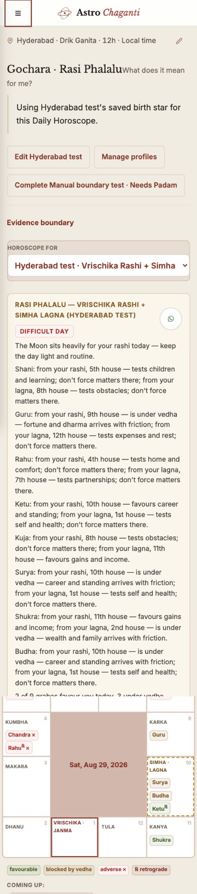

All interpretation first
Eight planetary paragraphs precede the chart and compete for the first screen.

A visual comparison grounded in the current product. The recommendation uses progressive disclosure to keep the daily decision layer within roughly five chunks while preserving the computed chart and evidence below.
Eight planetary paragraphs precede the chart and compete for the first screen.

Miller and Hick reduce the opening load; information scent keeps every computed detail findable.
The Moon sits heavily for your Janma Rashi today. Protect your energy, favour familiar work, and avoid forcing uncertain decisions.
Steady gains and practical conversations that already have momentum.
Home, comfort, and partnership matters may carry more friction than usual.
Use Panchangam windows for an action that cannot wait.
The detailed graha-by-graha verdicts remain available here, referenced only to the Janma Rashi and separated from interpretive guidance.
The existing South Indian chart, legend, upcoming moves, and evidence boundary continue immediately below.
Recommendation: preserve the current visual system, replace the paragraph wall with a concise decision layer, and put the full computed narration behind a clearly named disclosure. The strongest accent remains on the day verdict, following Von Restorff.